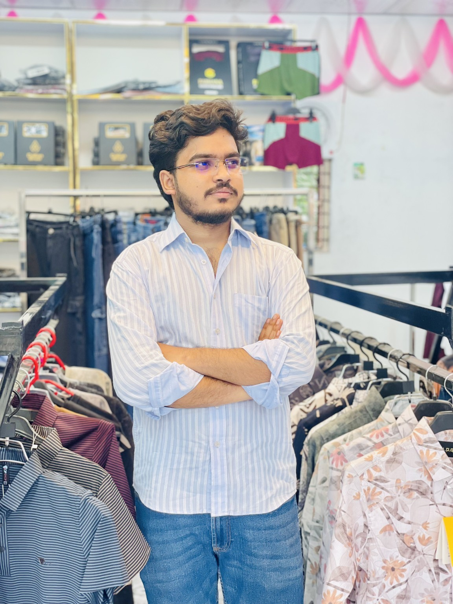

Fardin Jawad Tanim: Building a Fashion Brand in the Digital Era
The Founder & CEO of Honey Bunny Fashion is combining retail entrepreneurship with the growing opportunities of social media.

Young people are increasingly exploring entrepreneurship as a way to turn their ideas into practical ventures. Fardin Jawad Tanim, Founder and CEO of Honey Bunny Fashion, is pursuing that ambition in the fashion retail sector.
Honey Bunny Fashion offers clothing collections for men and has expanded its range with a Ladies Corner. Through this business, Tanim aims to serve customers with a varied selection of fashion items while developing a recognizable retail identity.
Using Social Media to Reach Customers
Social media has become an important communication channel for modern businesses. Platforms such as Facebook and Instagram allow fashion retailers to introduce new arrivals, share product photos and videos, announce promotional offers, and respond to customer enquiries.
For a growing brand, regular updates and clear communication can help customers stay informed and build familiarity with the business. Social media can also complement the in-store experience by helping shoppers discover products before visiting a store.
Education Alongside Entrepreneurship
Alongside his business activities, Tanim is studying Tourism and Hospitality Management at Daffodil International University. Balancing academic life with business responsibilities gives him opportunities to develop skills in communication, planning, and customer relations.
Looking Towards the Future
Tanim aims to continue developing Honey Bunny Fashion and strengthen its relationship with customers. His journey reflects the initiative of a young entrepreneur exploring how retail business and digital communication can work together in a changing marketplace.
Entrepreneur Profile
- Name: Fardin Jawad Tanim
- Position: Founder & CEO
- Business: Honey Bunny Fashion
- Academic Institution: Daffodil International University
- Department: Tourism and Hospitality Management
- Business Focus: Fashion Retail & Social Media Marketing